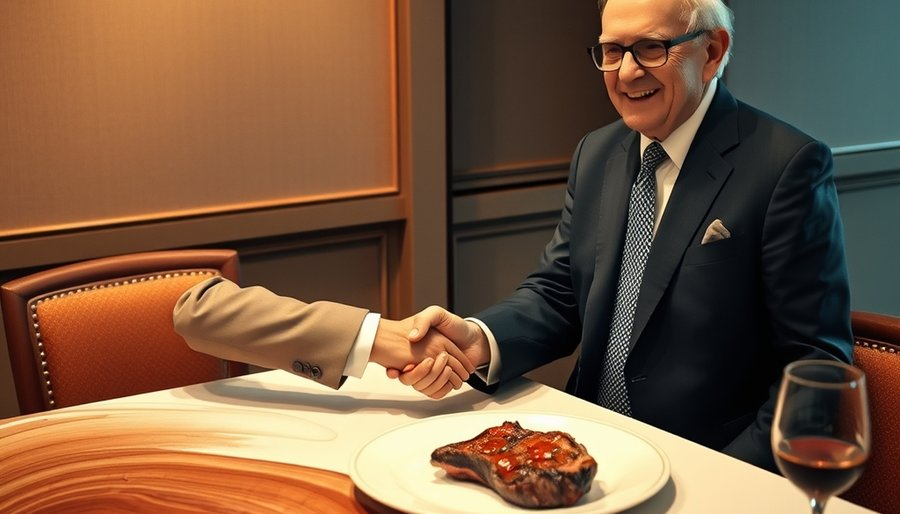
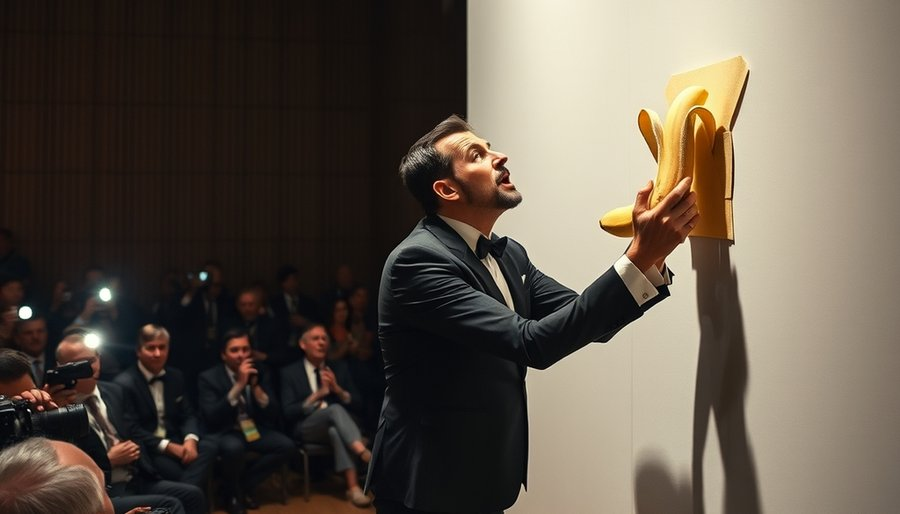

1990年，孙宇晨出生在青海西宁。在这个中国西北的内陆城市，通往顶尖大学的路径通常只有一条：高考。但孙宇晨找到了一条旁路。
2008年前后，由《萌芽》杂志主办的新概念作文大赛已经运行了十年。这个大赛1998年创办，旨在发掘文学新人，获奖者可以获得北京大学等名校的降分录取资格。韩寒、郭敬明等少年作家已经证明了这条路可行。孙宇晨参加了比赛，并拿到了奖项。他在自传《这世界既残酷也温柔》中记载了这段经历：一个青海少年，靠一支笔敲开了北京大学的大门。对于没有竞赛奖牌、没有自主招生加分的他来说，新概念作文大赛就是高考体系上的一个‘接口’——只要写出一篇好文章，就能绕过千军万马的独木桥。
进入北大后，孙宇晨没有停下寻找最优路径的脚步。他很快发现，在北大，不同院系的GPA竞争强度天差地别。热门的经济、法律专业里挤满了各省的状元，而历史系这样的冷门文科专业，课程给分相对宽松，竞争压力小得多。他在多个院系间比较后，最终选择转入历史系。这一策略后来被证明是成功的：他以优异成绩毕业，并获得了宾夕法尼亚大学东亚研究硕士项目的录取。
2011年，在费城，孙宇晨接触到了一个当时还非常小众的东西——比特币。这一年，比特币的价格刚从几美分涨到几十美元，大多数人要么没听说过，要么认为这是骗局。孙宇晨却看到了其中的机会。他开始购买比特币，成为最早的一批投资者。这是他第一次在别人还看不懂的时候下注。2013年，他加入加密货币公司Ripple Labs担任首席代表，正式踏入这个行业。这段经历让他看清了一件事：这个新生行业最大的特点不是技术，而是监管真空。没有明确的法规，就意味着没有明确的边界。在这里，行动快的人可以抢在规则成型之前完成布局。
没有家庭背景，没有技术天才，没有资本人脉——这个青海青年最初拥有的，只是对规则漏洞的精准嗅觉。而他后来的人生证明，这只是一个开始。
2017年，孙宇晨创立了TRON，发行TRX代币，并启动了ICO。据《The Verge》2022年的长篇调查报道《The many escapes of Justin Sun》披露，孙宇晨可能提前知晓了中国政府即将禁止ICO的消息。2017年9月3日，TRON完成ICO，募集了约7000万美元。9月4日，中国政府宣布ICO为非法融资行为，全面禁止。当禁令消息传开时，孙宇晨已经登上了飞往旧金山的航班。
时间掐得如此精准，以至于很难用巧合来解释。《The Verge》的调查还指出，TRON的白皮书与其他项目的白皮书高度相似，涉嫌抄袭。但这些争议没有影响他的步伐——他带着7000万美元，在美国开始了新的游戏。TRON在技术上或许不是最创新的项目，但孙宇晨在时机上的把控，让他在监管的门槛落下之前，完成了最关键的一跃。此后他长期滞留海外，无法返回中国。
带着ICO募集的资金，孙宇晨开始扩张他的加密帝国。2018年，他以1.4亿美元收购了BitTorrent Inc.。BitTorrent协议自2001年诞生以来，积累了全球数亿用户，是互联网上最知名的去中心化文件共享系统。但它一直没有找到可持续的商业模式。孙宇晨看到了一个完美的‘壳’：BitTorrent有用户，但没有变现模式；他有代币，但需要用户。他把两者结合，发行了BTT代币，将BitTorrent的用户基础变成了代币经济的燃料。这一操作让TRON的生态迅速膨胀，BTT代币一度在市场上引发热潮。孙宇晨再次展现了他‘借壳’的能力：用一个既有用户基础，为新的代币经济提供燃料。

2019年，孙宇晨又做了一个让全世界瞩目的动作：他在慈善拍卖中以456万美元的天价拍下了沃伦·巴菲特的午餐。巴菲特是加密货币的公开批评者，曾称比特币为‘老鼠药’。孙宇晨却高调宣布要与这位传奇投资人共进午餐，瞬间登上全球媒体头条。但他随后又宣布推迟午餐，据称是因为中国政府施压。直到2020年初，这顿饭才低调完成。
一顿饭花456万美元，值吗？从传播效果来看，这可能是史上最划算的广告。全球媒体免费报道了‘孙宇晨与巴菲特吃饭’这件事，让一个原本只在币圈知名的名字，进入了大众视野。孙宇晨后来在社交媒体上称，他在午餐时向巴菲特赠送了加密货币。不管巴菲特有没有被说服，孙宇晨已经完成了他的目的：把一顿饭变成了全球品牌投流。
2021年，孙宇晨的身份突然发生了转变：他成为了格林纳达政府任命的WTO常驻代表，获得了外交豁免权。《华尔街日报》引述知情人士称，这一安排旨在规避美国司法部正在进行的调查。一个中国出生的加密货币企业家，摇身一变成了加勒比小国的外交官，这个操作让法律界人士目瞪口呆。法庭文件显示，孙宇晨早已是圣基茨和尼维斯公民，并拥有马耳他居留权。据《The Verge》报道，他还试图获取几内亚比绍等国的公民身份。他的护照组合就像一个精心设计的法律防火墙。
2023年3月，美国证券交易委员会（SEC）正式起诉孙宇晨，指控他涉嫌欺诈和非法证券发行。如果罪名成立，他可能面临巨额罚款甚至刑事指控。但孙宇晨似乎并不慌张。2024年，他花620万美元在拍卖会上买下了意大利艺术家卡特兰的作品《喜剧演员》——一根用胶带贴在墙上的香蕉——然后当场吃掉。这根香蕉的成本是620万美元，可能是人类历史上最贵的一顿水果。这个行为艺术般的举动再次让他成为全球话题。

2022年，《The Verge》的调查报道以《The many escapes of Justin Sun》为题，详细记录了他的多次逃脱。但更大的逃脱还在后面。2025年，孙宇晨投资了约7500万美元，购买与特朗普关联的加密项目World Liberty Financial的代币。不久之后，特朗普于2025年1月20日就职美国总统。2025年2月，SEC向法院提交文件，自愿撤销了对孙宇晨的诉讼。时间线高度吻合：投资特朗普项目，SEC撤诉。多家媒体指出两者之间的关联，但直接因果关系未被正式确认。
从格林纳达外交官到特朗普投资，孙宇晨再次展示了他在系统之间寻找缝隙的能力。当监管机构起诉你时，成为总统的商业伙伴——这可能是他找到的最大的漏洞。
孙宇晨的故事如果停在这里，已经足够离奇。但更让人难以消化的是，他每一次的‘漏洞利用’都没有像传统叙事那样招致毁灭性的后果。高考走捷径？他进了北大。ICO前夜跑路？他带走了7000万美元。被SEC起诉？他通过投资总统项目让案件撤销。他像一个永远能在最后一刻找到出口的游戏玩家。
但这并不意味着没有代价。他无法回到中国，在中国的资产和法律状态成谜。他在美国也被视为问题人物，SEC的诉讼虽然撤销，但调查的阴影并未完全散去。他通过格林纳达外交身份和多重国籍，在两套法律体系之间找到了一条窄路，但这条路能走多久，没人知道。
2024年，他吃掉了那根620万美元的香蕉。这或许是他对自己人生最准确的隐喻：他消费了艺术，消费了规则，消费了每一个系统最脆弱的部分。有人叫他骗子，有人叫他天才。但无论如何，他确实把世界看成了一系列可以破解的系统，每一条规则都是一个接口。至于这算不算成功，每个人都有自己的答案。他的故事挑战了我们对‘走捷径终将付出代价’的道德预期，也让人不得不重新审视规则本身——当规则可以被如此轻易地绕过，到底是寻找漏洞的人太聪明，还是系统本身太脆弱？
尾声
孙宇晨至今仍活跃在加密货币世界。他的TRON公链仍在运行，他的推特账号依然高调。他无法回到中国，在美国的法律风险也并未完全消除，但他似乎总能找到新的缝隙。2026年，福布斯将他列入全球亿万富豪榜，但具体数字成谜。他的多重国籍和外交身份构成了一张复杂的法律安全网。有人称他为‘币圈贾跃亭’，但这个类比忽略了一个关键区别：贾跃亭的漏洞最后堵上了，孙宇晨的漏洞似乎总是刚好够他穿过。他的存在本身，就是对现代监管体系的一次持续测试。
小汪老师的成长观察笔记